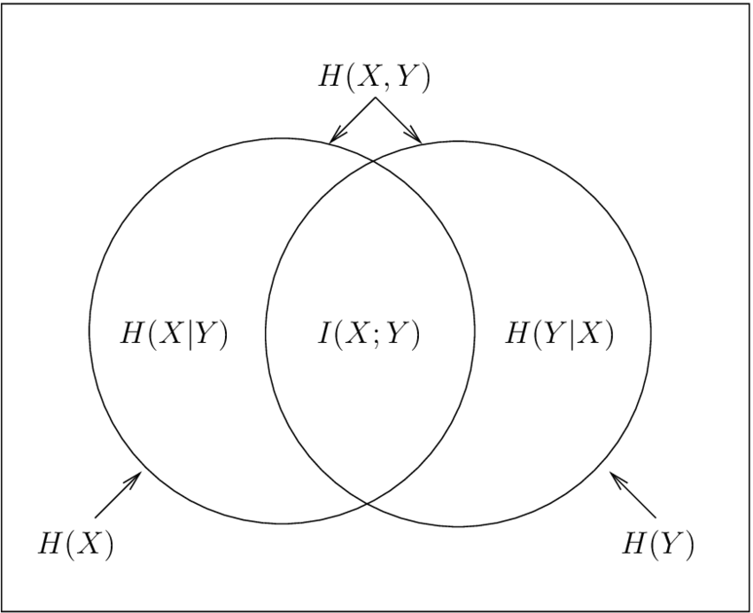

상호 정보량은..
상호 정보량(mutual information, MI)은 정보 이론(Information Theory)에서 두 확률 변수 간의 의존성을 측정하는 방법입니다. 상호 정보량은 두 확률 변수가 서로 얼마나 많은 정보를 공유하는지를 나타내며, 그 값이 클수록 두 변수 사이의 의존성이 높다고 볼 수 있습니다. 상호 정보량은 엔트로피와 조건부 엔트로피를 기반으로 한 수식으로 계산됩니다.
두 확률 변수 X와 Y가 주어졌을 때, 상호 정보량은 다음과 같이 정의됩니다:
\[ MI(X; Y) = \displaystyle \sum_{x \in X }\sum_{y \in Y}p(x,y)log[\frac{p(x,y)}{p(x),p(y)}] \]
R-squared와의 차이
상호 정보량(mutual information, MI)과 결정계수(R-squared)는 두 변수 간의 관계를 측정하는 데 사용되는 통계적인 지표입니다. 그러나 이들은 서로 다른 가정과 계산 방법을 기반으로 하며, 각각 다른 측면을 강조합니다.
- MI는 두 변수 간의 일반적인 의존성을 측정하는 반면, R-squared는 두 변수 간의 선형 관계를 측정합니다. MI는 선형, 비선형, 모노토닉 등 모든 종류의 관계를 고려하지만, R-squared는 선형 관계에만 국한됩니다.
- MI는 양수 또는 0의 값을 가질 수 있으며, 값이 클수록 두 변수가 많은 정보를 공유한다는 것을 의미합니다. R-squared의 값은 0과 1 사이에 있으며, 값이 1에 가까울수록 선형 관계가 강하다는 것을 나타냅니다.